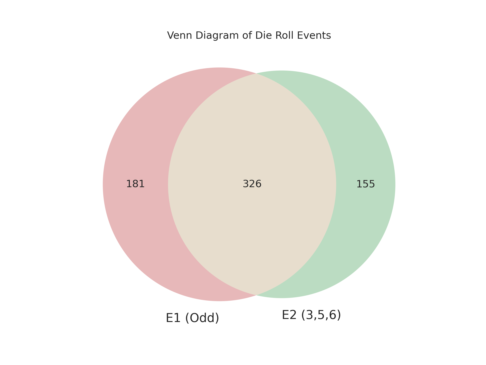
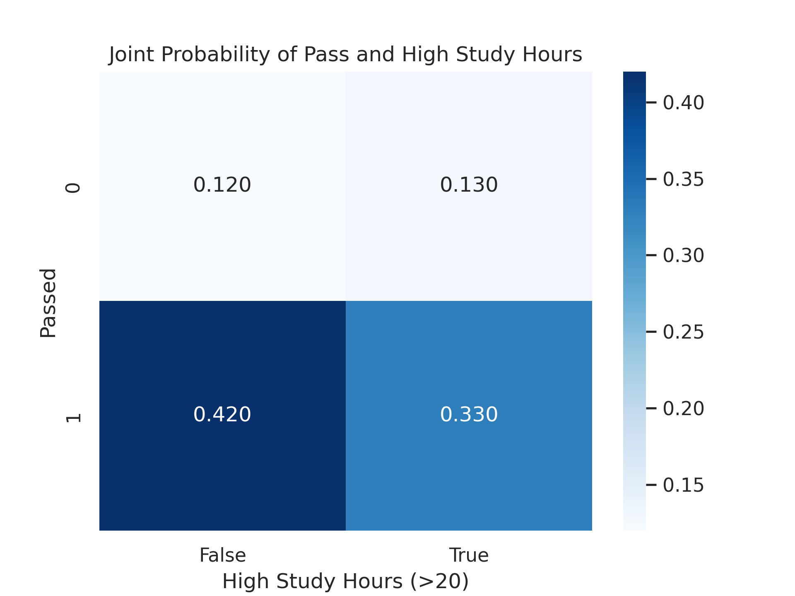
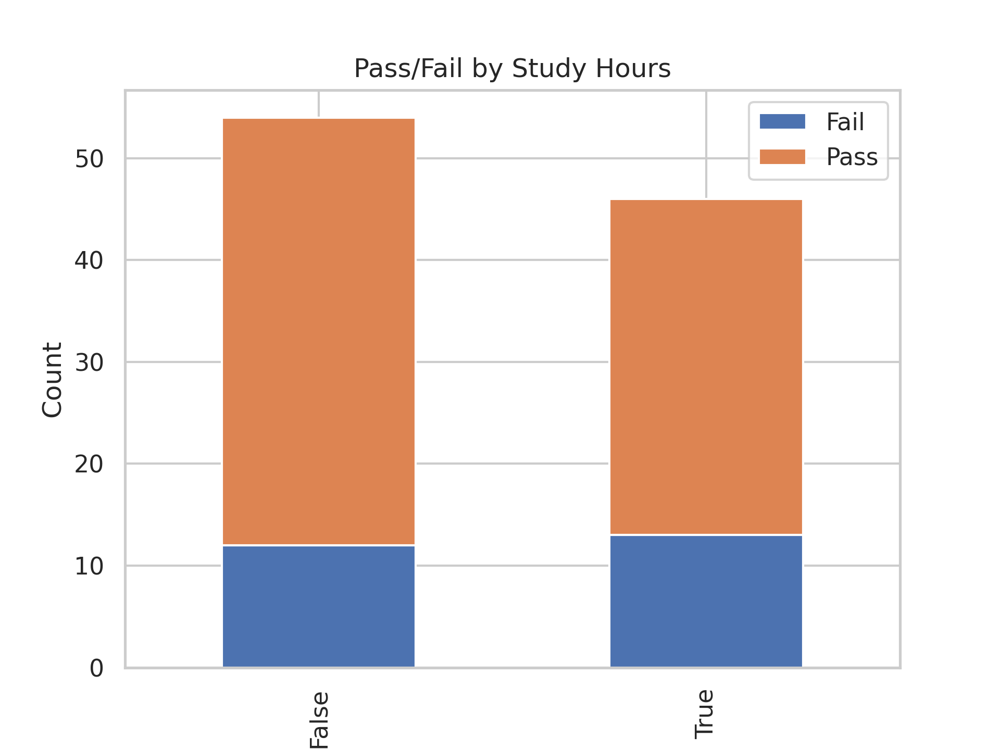
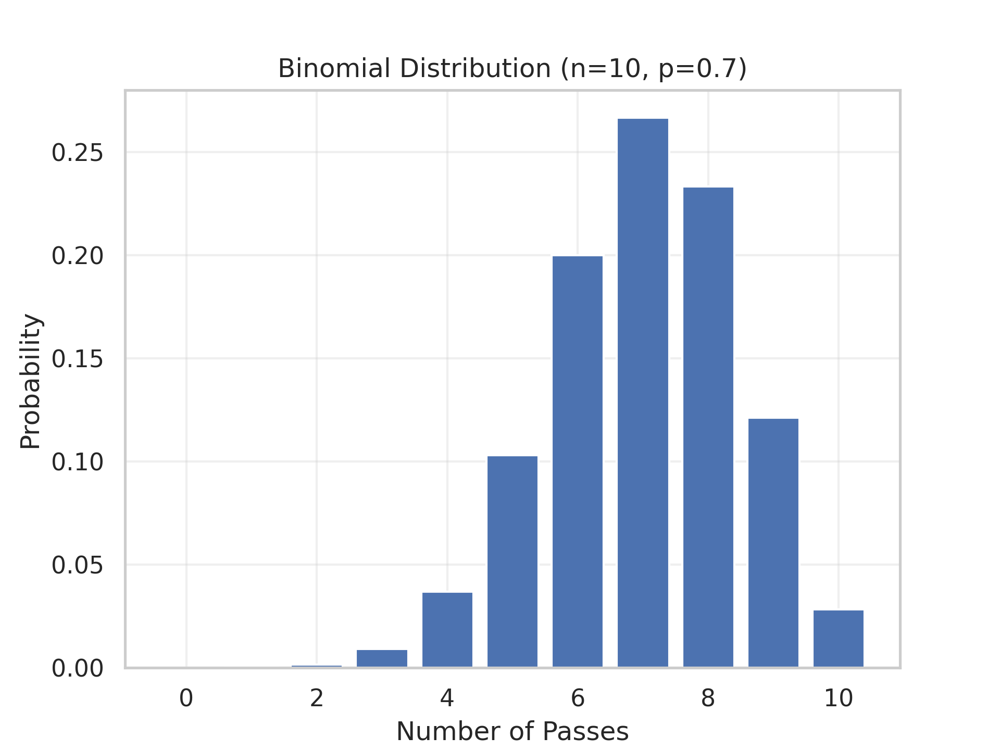
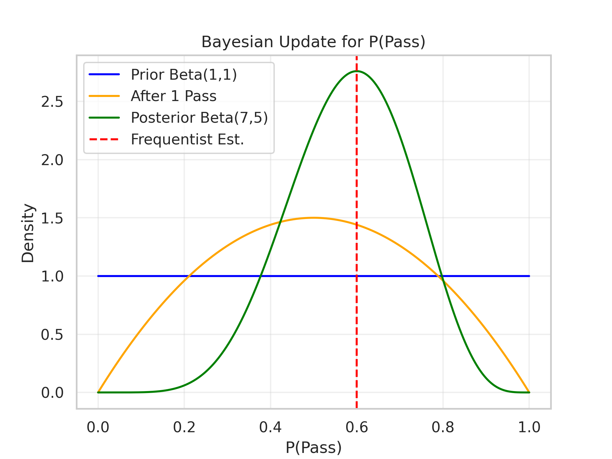

Section 1.4 Basic Probability for Machine Learning
Probability is the backbone of machine learning, helping us model uncertainty in data, predictions, and outcomes. In machine learning, probability underpins tasks like classification (e.g., predicting labels), evaluating model confidence, and handling noisy data. This section introduces probability concepts such as sample spaces, events, and axioms—and connects them to practical machine learning applications using Python. We will use the student dataset from Section 1.3 to illustrate ideas.
An event is a specific outcome or set of outcomes from an experiment, represented as a set. For a coin toss, "heads" is \(\{H\}\text{,}\) "tails" is \(\{T\}\text{,}\) and "heads or tails" is \(\{H, T\}\text{.}\) Each trial answers whether an event occurred (yes/no). For a die roll yielding 2, events like \(\{2\}\) or \(\{1,2,3\}\) occur if they include 2. Sets allow combining events via union (\(\cup\)) or intersection (\(\cap\)), such as \(\{H\} \cup \{T\} = \{H, T\}\text{.}\)
Subsection 1.4.1 Axiomatic View of Probability
In 1933, Andrey Kolmogorov formalized probability with three axioms, providing a mathematical framework. Think of these as rules that ensure probabilities make sense, like ensuring a weather forecast never predicts negative rain or more than 100% chance.
Sample Space \(\Omega\): The set of all possible outcomes. For a six-sided die, \(\Omega = \{1, 2, 3, 4, 5, 6\}\text{.}\) For a student passing an exam, \(\Omega = \{\text{Pass}, \text{Fail}\}\text{.}\)
Event Space \(F\): All possible subsets of \(\Omega\text{,}\) including the empty set \(\varnothing\) (impossible event) and \(\Omega\) (event certain to happen). For a coin toss (\(\Omega = \{H, T\}\)), \(F = \{\varnothing, \{H\}, \{T\}, \{H, T\}\}\text{.}\) With \(N\) outcomes, \(F\) has \(2^N\) events.
Probability Measure \(P\): Assigns a number \(P(E)\) to each event \(E \in F\text{,}\) representing its likelihood. For example, for a fair die, \(P(\{1\}) = 1/6\text{.}\)
The probability space is the triplet \((\Omega, F, P)\text{.}\) Kolmogorov’s axioms are:
-
Non-negativity:\begin{equation} P(E) \ge 0\tag{1.4.1} \end{equation}for all \(E \in F\text{.}\)
-
Normalization:\begin{equation} P(\Omega) = 1\text{,}\tag{1.4.2} \end{equation}ensuring total certainty for event \(\Omega\text{.}\)
-
Additivity: For disjoint events (\(E_1 \cap E_2 = \varnothing\)),\begin{equation} P(E_1 \cup E_2) = P(E_1) + P(E_2)\text{.}\tag{1.4.3} \end{equation}
Derived results:
\begin{align}
\amp P(\varnothing) = 0. \tag{1.4.4}\\
\amp P(E^c) = 1 - P(E), \text{ where } E^c \text{ is the complement of } E. \tag{1.4.5}\\
\amp P(E_1 \cup E_2) = P(E_1) + P(E_2) - P(E_1 \cap E_2). \tag{1.4.6}
\end{align}
The union formula accounts for overlap, as shown in Figure 1.4.1. For a die, if \(E_1 = \{1,3,5\}\) (odd numbers), \(E_2 = \{3,5,6\}\text{,}\) then \(P(E_1 \cup E_2) = P(\{1,3,5,6\}) = 4/6 = 2/3\text{.}\)

# --- DIE ROLL VENN DIAGRAM ---
import numpy as np
from matplotlib_venn import venn2
import matplotlib.pyplot as plt
np.random.seed(42)
n_trials = 1000
rolls = np.random.randint(1, 7, n_trials)
# Events
e1 = np.isin(rolls, [1, 3, 5]) # Odd numbers
e2 = np.isin(rolls, [3, 5, 6]) # 3,5,6
e1_only = np.sum(e1 \amp; ~e2)
e2_only = np.sum(e2 \amp; ~e1)
both = np.sum(e1 \amp; e2)
# Venn diagram
plt.figure(figsize=(6, 4))
venn2(subsets=(e1_only, e2_only, both), set_labels=('E1 (Odd)', 'E2 (3,5,6)'))
plt.title('Venn Diagram of Die Roll Events')
plt.savefig('venn-diagram-E1-E2.png', dpi=300)
plt.show()
# Probabilities
p_e1 = np.mean(e1)
p_e2 = np.mean(e2)
p_inter = np.mean(e1 \amp; e2)
p_union = np.mean(e1 | e2)
print(f"P(E1): {p_e1:.3f}, P(E2): {p_e2:.3f}, P(E1 ∩ E2): {p_inter:.3f}, P(E1 ∪ E2): {p_union:.3f}")
# --- END CODE ---
Subsection 1.4.2 Sum and Product Rules for Probability
The sum and product rules are foundational for computing probabilities of combined events, essential for machine learning tasks like feature engineering and Bayesian inference.
Sum Rule: The probability of the union of two events \(A\) and \(B\) is given by:
\begin{equation}
P(A \cup B) = P(A) + P(B) - P(A \cap B).\tag{1.4.7}
\end{equation}
This accounts for overlapping events to avoid double-counting. In machine learning, the sum rule is used to compute marginal probabilities from joint distributions.
Product Rule: The joint probability of two events \(A\) and \(B\) is:
\begin{equation}
P(A \cap B) = P(A|B)P(B),\tag{1.4.8}
\end{equation}
where \(P(A|B)\) is the conditional probability of \(A\) given \(B\text{.}\) This rule is key for factoring joint probabilities in models like Naive Bayes.
Example: For a fair die, let \(A = \{1,2,3\}\) (numbers ≤ 3) and \(B = \{3,4,5\}\text{.}\) The sum rule gives \(P(A \cup B) = P(A) + P(B) - P(A \cap B) = 3/6 + 3/6 - 1/6 = 5/6\text{,}\) as \(A \cap B = \{3\}\text{.}\) For the product rule, consider the student dataset from Section 1.3: the probability of passing and studying >20 hours is \(P(\text{Pass} \cap \text{High Study}) = P(\text{Pass} | \text{High Study})P(\text{High Study})\text{.}\)
# --- SUM AND PRODUCT RULES ---
import pandas as pd
import numpy as np
import seaborn as sns
import matplotlib.pyplot as plt
# Student data
np.random.seed(42)
data = pd.DataFrame({
'Hours_Studied': np.random.normal(20, 5, 100).clip(0, 40),
'Passed': np.random.binomial(1, 0.7, 100)
})
data['High_Study'] = data['Hours_Studied'] > 20
# Compute probabilities
p_pass = np.mean(data['Passed'])
p_high_study = np.mean(data['High_Study'])
p_pass_and_high = np.mean(data['Passed'] \amp; data['High_Study'])
p_pass_or_high = p_pass + p_high_study - p_pass_and_high # Sum rule
p_pass_given_high = p_pass_and_high / p_high_study # For product rule
print(f"P(Pass): {p_pass:.3f}, P(High Study): {p_high_study:.3f}")
print(f"P(Pass ∩ High Study): {p_pass_and_high:.3f}")
print(f"P(Pass ∪ High Study): {p_pass_or_high:.3f}")
print(f"Product Rule: P(Pass ∩ High Study) = P(Pass | High Study) * P(High Study) = {p_pass_given_high:.3f} * {p_high_study:.3f} = {p_pass_given_high * p_high_study:.3f}")
# Heatmap of joint probabilities
joint_table = pd.crosstab(data['Passed'], data['High_Study'], normalize='all')
sns.heatmap(joint_table, annot=True, cmap='Blues', fmt='.3f')
plt.xlabel('High Study Hours (>20)')
plt.ylabel('Passed')
plt.title('Joint Probability of Pass and High Study Hours')
plt.savefig('joint-probability-heatmap.png', dpi=300)
plt.show()
# --- END CODE ---

Subsection 1.4.3 Conditional Probability and Independence
Conditional Probability: The probability of an event \(A\) given that \(B\) has occurred, denoted \(P(A|B) = \frac{P(A \cap B)}{P(B)}\text{,}\) where \(P(B) > 0\text{.}\) For example, the probability a student passes given they studied over 20 hours.
Independence: Events \(A\) and \(B\) are independent if \(P(A \cap B) = P(A)P(B)\text{,}\) meaning one event doesn’t affect the other.
Example: Using the student dataset from Section 1.3, estimate the probability of passing given high study hours.
# --- CONDITIONAL PROBABILITY ---
import pandas as pd
import numpy as np
# Student data
np.random.seed(42)
data = pd.DataFrame({
'Hours_Studied': np.random.normal(20, 5, 100).clip(0, 40),
'Passed': np.random.binomial(1, 0.7, 100)
})
data['High_Study'] = data['Hours_Studied'] > 20
# Conditional probability
p_pass = np.mean(data['Passed'])
p_high_study = np.mean(data['High_Study'])
p_pass_and_high = np.mean(data['Passed'] \amp; data['High_Study'])
p_pass_given_high = p_pass_and_high / p_high_study
print(f"P(Pass | High Study): {p_pass_given_high:.3f}")
# Bar plot
counts = data.groupby(['High_Study', 'Passed']).size().unstack()
counts.plot(kind='bar', stacked=True)
plt.xlabel('High Study Hours (>20)')
plt.ylabel('Count')
plt.title('Pass/Fail by Study Hours')
plt.legend(['Fail', 'Pass'])
plt.savefig('./images/essential-probability-and-statistics/conditional-bar.png', dpi=300)
plt.show()
# --- END CODE ---

Subsection 1.4.4 Probability Distributions
Probability distributions describe how probabilities are distributed over outcomes. In machine learning, distributions model data or predictions.
Bernoulli Distribution: Models a binary outcome (e.g., pass/fail) with probability \(p\text{.}\) For passing an exam, \(P(\text{Pass}) = p\text{,}\) \(P(\text{Fail}) = 1-p\text{.}\)
Binomial Distribution: Counts successes in \(n\) independent Bernoulli trials. For 10 students, the number who pass follows a binomial distribution.
# --- BINOMIAL DISTRIBUTION ---
import numpy as np
import matplotlib.pyplot as plt
from scipy.stats import binom
n, p = 10, 0.7 # 10 students, P(Pass) = 0.7
k = np.arange(0, 11)
pmf = binom.pmf(k, n, p)
plt.bar(k, pmf)
plt.xlabel('Number of Passes')
plt.ylabel('Probability')
plt.title('Binomial Distribution (n=10, p=0.7)')
plt.grid(True, alpha=0.3)
plt.savefig('./images/essential-probability-and-statistics/binomial-dist.png', dpi=300)
plt.show()
# --- END CODE ---

Subsection 1.4.5 Three Types of Probabilities
Probability can be approached theoretically, empirically (frequentist), or subjectively (Bayesian).
-
Theoretical Probability: Uses symmetry. For a fair die, \(P(\{1\}) = 1/6\text{.}\) For even numbers, \(P(\{2,4,6\}) = 3/6 = 0.5\text{.}\)
-
Frequentist Probability: Estimates probability from trial frequencies:\begin{equation} p = \lim_{N \to \infty} \frac{n}{N}\text{.}\tag{1.4.9} \end{equation}
# --- FREQUENTIST SIMULATION --- import numpy as np import matplotlib.pyplot as plt np.random.seed(42) n_trials = 1000 fair_rolls = np.random.randint(1, 7, n_trials) biased_rolls = np.random.choice([1, 2, 3, 4, 5, 6], n_trials, p=[0.2, 0.2, 0.2, 0.2, 0.1, 0.1]) # Cumulative probabilities cum_fair = np.cumsum(fair_rolls == 1) / np.arange(1, n_trials + 1) cum_biased = np.cumsum(biased_rolls == 1) / np.arange(1, n_trials + 1) plt.plot(cum_fair, label='Fair Die (P=1/6)') plt.plot(cum_biased, label='Biased Die (P=0.2)') plt.axhline(1/6, color='red', linestyle='--', label='Theoretical P=1/6') plt.xlabel('Trials') plt.ylabel('Estimated P(1)') plt.title('Frequentist Estimates: Fair vs. Biased Die') plt.legend() plt.grid(True, alpha=0.3) plt.savefig('frequentist-convergence.png', dpi=300) plt.show() # --- END CODE ---
Figure 1.4.5. Plot showing the convergence of frequentist probability estimates for rolling a 1 on a fair die (\(P(1)=1/6 \approx 0.167\)) and a biased die (\(P(1)=0.2\)) over 1,000 trials. The fair die’s estimate (blue) fluctuates but approaches 1/6 (red dashed line), while the biased die’s estimate (orange) converges to 0.2, reflecting the higher probability of rolling a 1. This visualization demonstrates how empirical frequencies approximate true probabilities in large samples, a technique used in machine learning to estimate probabilities from training data. -
Bayesian Probability: Updates prior beliefs with data using Bayes’ theorem: \(P(\theta|D) = \frac{P(D|\theta)P(\theta)}{P(D)}\text{.}\) For die face 1, use a Beta prior, updated to Beta(\(\alpha + n_1, \beta + (N - n_1)\)).Example: Estimate \(P(\text{Pass})\) for students using the dataset, starting with a Beta(1,1) prior.
# --- BAYESIAN UPDATE --- import numpy as np import matplotlib.pyplot as plt from scipy.stats import beta import pandas as pd # Student data np.random.seed(42) data = pd.DataFrame({ 'Passed': np.random.binomial(1, 0.7, 10) }) # Prior: Beta(1,1) a, b = 1, 1 n, n1 = len(data), data['Passed'].sum() a_post, b_post = a + n1, b + n - n1 # Plot prior and posterior x = np.linspace(0, 1, 1000) plt.plot(x, beta.pdf(x, a, b), label='Prior Beta(1,1)', color='blue') plt.plot(x, beta.pdf(x, a + 1, b + 1), label='After 1 Pass', color='orange') plt.plot(x, beta.pdf(x, a_post, b_post), label=f'Posterior Beta({a_post},{b_post})', color='green') plt.axvline(n1/n, color='red', linestyle='--', label='Frequentist Est.') plt.xlabel('P(Pass)') plt.ylabel('Density') plt.title('Bayesian Update for P(Pass)') plt.legend() plt.grid(True, alpha=0.3) plt.savefig('./images/essential-probability-and-statistics/bayesian-update.png', dpi=300) plt.show() # --- END CODE ---Figure 1.4.6. Plot showing the Bayesian update of the probability of a student passing an exam, starting with a uniform Beta(1,1) prior (blue). After observing one pass (orange) and 10 trials with 3 passes (green, posterior Beta(4,8)), the distribution shifts, with the posterior mean at 4/12 ≈ 0.333. The frequentist estimate (red dashed line, 3/10 = 0.3) is shown for comparison. This visualization illustrates how Bayesian methods incorporate prior beliefs and data to refine probability estimates, a technique used in machine learning for probabilistic models and uncertainty quantification.
Probability provides the foundation for modeling uncertainty in machine learning. Axioms define the rules, while theoretical, frequentist, and Bayesian approaches offer different perspectives. Conditional probability and distributions like binomial are key for models like Naive Bayes. Practice with datasets from Section 1.3 and libraries from Section 1.2 to apply these concepts. Explore Probability Course for further learning.
1
probabilitycourse.com